Abstract
摘要
AI在基本面量化投研中的关键应用场景：大语言模型（LLM）文本解析
基本面数据特征：低频率、高密度。基本面数据频率相对较低，通常按季度披露，主要来源于定期报告、分析师盈利预测等，相比高频交易数据，基本面量化模型可利用的有效样本更少。但基本面数据信息更加丰富，除营收、净利润等结构化财务指标外，还包含大量行业与非财务信息，例如行业竞争格局、商业模式等，这类信息往往难以通过传统财务因子直接刻画，却是判断公司长期竞争力和盈利质量的重要依据。
AI在基本面量化中的应用场景主要有两方面：Alpha挖掘、非结构化文本信息处理。虽然基本面信息的有效样本数较少，但也可在模型复杂度约束下使用一些机器学习模型进行alpha挖掘，我们曾在前面的基本面量化系列报告中有所尝试。另一方面，大语言模型（LLM）的出现，显著提升了AI对金融文本的语义理解能力。相比传统NLP模型，LLM不仅能够识别文本情绪，还能够进一步理解企业经营逻辑、行业竞争环境、风险提示以及战略方向等更复杂的信息。这使得AI在基本面量化中的作用，从“文本情绪打分”进一步升级为“基本面认知提取”。
成长趋势选股策略改进：从“好公司、好价格”到“好赛道、好公司、好价格”
原成长趋势共振选股策略基于利润的增长趋势、分析师预期信息、估值、市场反应等信息挖掘优质的成长公司，是“好公司、好价格”的二维筛选。该策略2021年以来的年化收益率达19.7%（截至2026-04-30），相对偏股混合型基金指数超额收益达18个百分点，总体收益表现良好。
LLM的财报文本解析有助于成长策略定位优势赛道。上市公司年度/半年度报告中，在管理层讨论与分析（Management Discussion and Analysis，MD&A）部分，相比财务报表中的结构化数据，MD&A包含了更多管理层对于公司经营环境、行业变化、未来战略和潜在风险的分析和判断。运用大语言模型（如：DeepSeek等）从中有效获取报告期行业需求变化、未来展望等信息，可以考察行业需求天花板和上行周期，在更高维度上去验证增长的持续性和空间性。
LLM财报文本评分的稳定性分析：对于财务报告中有较为明确表述的内容，DeepSeek多次独立的评分结果是较为稳定的，具有较好的可复现性，如报告期行业需求分析等；但是对于财务报告中未直接阐述的概念，DeepSeek则会通过一些语句去判断是否存在一些暗示，此时评分结果是不稳定的，如报告期产品渗透率分析。
结合LLM财报解析的新成长趋势策略2021年以来年化收益率达31.7%，相较原策略提升了10个百分点。我们在原成长趋势选股过程中，加入一层LLM财报文本评分筛选，优选报告期行业需求明显上行的公司，同时剔除行业未来需求判断下行或管理层“坦诚度”评分较低的公司，构建了结合LLM财报解析的新成长趋势策略。该策略2021年以来每年的收益均相较原模型有所提升。截至2026-05-25，策略2026年YTD收益率达34.6%，超额偏股混合型基金指数20个百分点。
风险提示
本篇报告测试结果均基于历史数据及大语言模型生成的观点，市场环境发生变化以及大模型的不稳定性都可能影响未来策略的收益表现。
Text
正文
基本面量化策略如何与AI模型结合？
AI如何赋能投资？
随着大模型、深度学习、知识图谱与强化学习等技术逐步成熟，AI正在从单点工具演进为覆盖投研、交易、组合管理与风险控制的系统性能力。从应用场景来看，AI对投资领域的赋能主要体现在三条核心路径：Alpha挖掘、非结构化信息处理、交易策略优化，分别对应投资流程中的“信号发现—信息理解—决策执行”，共同构成当前AI赋能资产管理与量化投资的主要框架。
图表1：AI赋能投资的三条核心路径
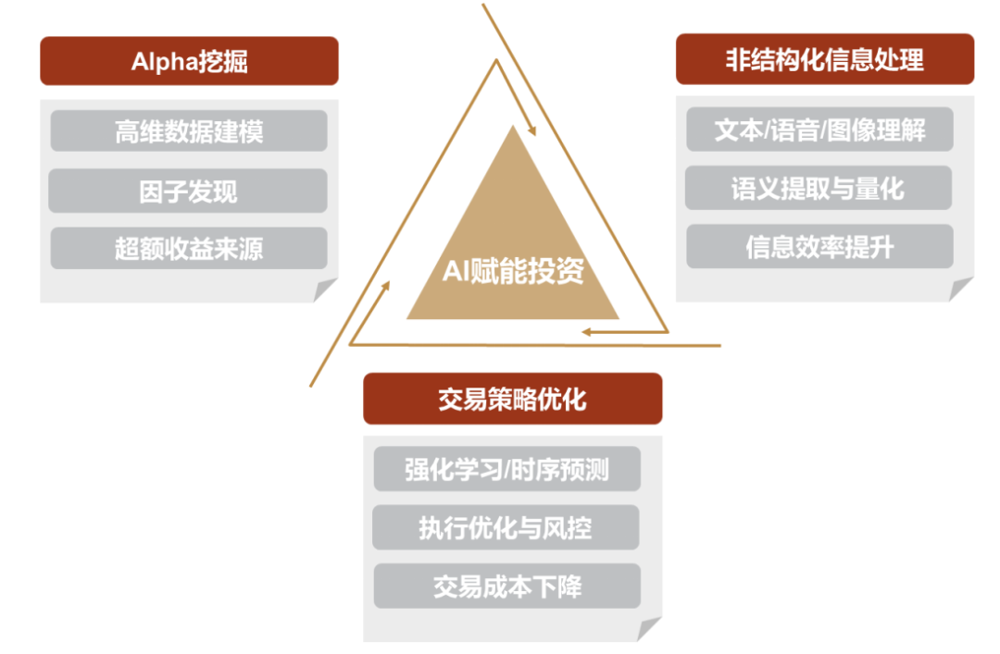
资料来源：中金公司研究部
基本面数据特征：低频率、高密度
在量化投资中，不同类型的数据具有不同的建模特征，也决定了AI模型的适用方式。高频价量数据通常具有更新频率高、样本数量大、结构化程度强等特点，更适合使用深度学习、强化学习等复杂模型挖掘短周期交易信号；而基本面数据则呈现出另一类特征：更新频率较低、有效样本相对有限，但信息维度更加丰富，且包含大量难以直接量化的经营与行业信息。
图表2：不同数据结构决定不同AI应用范式
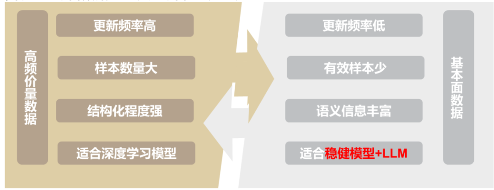
资料来源：中金公司研究部
基本面数据频率相对较低，通常按季度披露，主要来源于定期报告、财务报表、业绩预告、分析师盈利预测等，存在较明显的信息滞后性。相比高频交易数据，基本面量化模型可利用的有效样本更少，因此在模型设计上不能盲目追求复杂度，而需要更加重视模型稳健性、可解释性与过拟合控制。
基本面数据信息更加丰富。除营收、净利润、毛利率、ROE、资产负债率、经营性现金流、资本开支等结构化财务指标外，基本面数据还包含大量行业与非财务信息，例如行业竞争格局、市场份额变化、政策影响、管理层变动、技术壁垒、商业模式、供应链稳定性等。这类信息往往难以通过传统财务因子直接刻画，却是判断公司长期竞争力和盈利质量的重要依据。
图表3：基本面数据结构
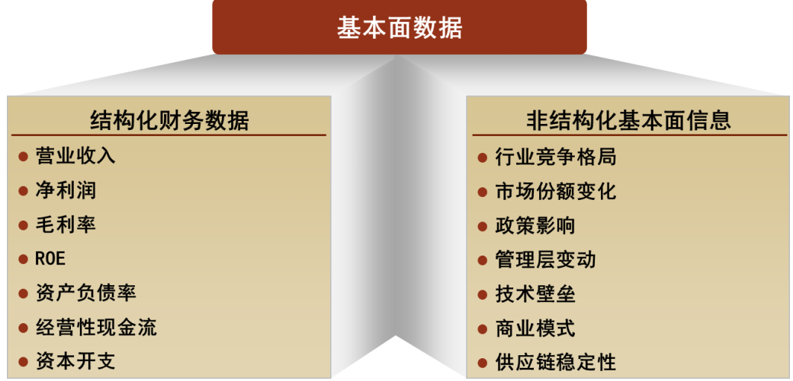
资料来源：中金公司研究部
AI在基本面量化中的应用场景：Alpha挖掘和信息提取
基于基本面数据“低频但丰富”的特征，AI模型在基本面量化中的应用可以沿着两条主线展开：一是针对结构化财务数据进行Alpha挖掘，二是针对非结构化文本信息进行语义理解与信息提取。
图表4：从基本面信息到投资信号
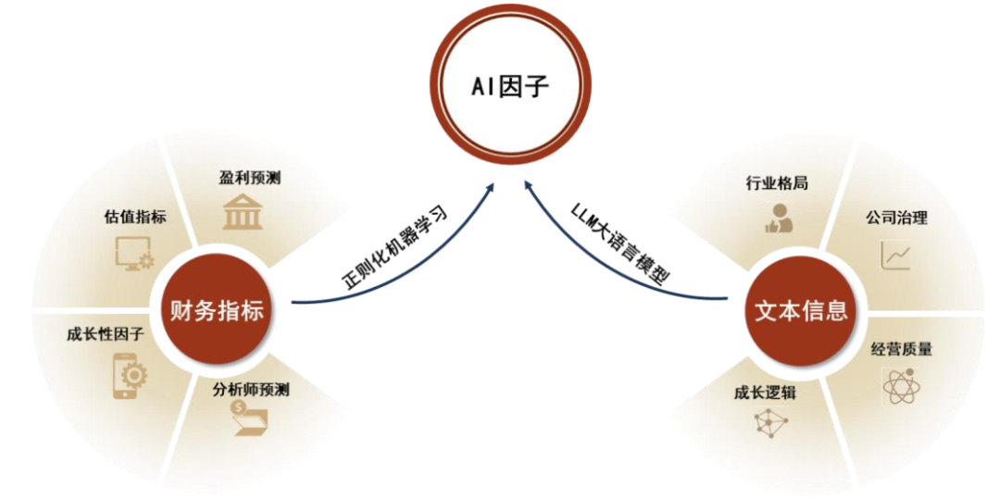
资料来源：中金公司研究部
结构化财务数据：利用机器学习提升盈利预测能力
在量化投资中，不同类型数据对应的AI模型类型和复杂度并不相同。
► 高频价量数据具有更新频率高、样本数量大、结构化程度强的特点，更适合使用深度学习、强化学习等复杂度较高、参数较多的模型挖掘交易信号。
► 基本面数据频率相对较低，信息维度丰富，也同样可以尝试运用机器学习方法处理财务指标、估值指标、分析师预测、盈利质量等结构化数据，从中识别企业未来盈利变化、盈利超预期或基本面改善的潜在信号。不过，模型复杂度需要受到严格约束。
具体来说，相比直接使用复杂深度学习模型，树模型等带有正则化约束的机器学习方法，往往更适合基本面量化场景。我们曾在报告《基本面量化系列（20）：机器学习模型如何提升企业盈利预测的准确度？》中，应用XGBoost模型预测上市公司未来盈利的变化方向，并基于模型输出构建机器学习盈利预测因子。实证结果显示，该因子具有较好的选股有效性，全市场IC均值可达4.0%，说明机器学习方法能够在传统财务数据中进一步挖掘非线性信息，提高基本面因子的Alpha表达能力。
非结构化文本信息：从情绪识别走向基本面认知
在非结构化信息处理场景中，AI的价值更为突出。过去，基本面量化中常使用BERT等NLP模型对新闻、公告、研报和财报文本进行情绪打分，判断文本表达偏正面还是偏负面。这类方法能够在一定程度上提取文本情绪信号，但更多停留在情感分类和关键词识别层面，对于行业格局、竞争优势、管理质量等深层基本面信息的理解仍然有限。
大语言模型（LLM）的出现，显著提升了AI对金融文本的语义理解能力。相比传统NLP模型，LLM不仅能够识别文本情绪，还能够进一步理解企业经营逻辑、行业竞争环境、管理层表述变化、风险提示以及战略方向等更复杂的信息。这使得AI在基本面量化中的作用，从“文本情绪打分”进一步升级为“基本面认知提取”：将原本依赖研究员主观判断的行业格局、公司治理、经营质量和成长逻辑，转化为结构化、可量化、可用于策略构建的因子信号。
本篇报告主要在处理非结构化信息的场景中进行了尝试，利用大语言模型（LLM）解析上市公司的财务报告，获取了行业格局、公司管理质量等信息，弥补了我们原来的成长策略在行业认知领域的缺失，有效提高了策略收益表现，同时也为AI在基本面量化策略中的应用提供了宝贵经验。
LLM解析财务报告文本
财务报告结构解析：关注管理层讨论与分析（MD&A）
上市公司财务报告是基本面研究中最重要的信息载体之一，通常包括年度报告、半年度报告和季度报告。其中，年度报告和半年度报告披露的信息更为完整，不仅包含标准化财务报表，也涵盖公司经营情况、行业环境、风险因素、公司治理、战略规划等大量文本信息。
图表5：上市公司财务报告解析
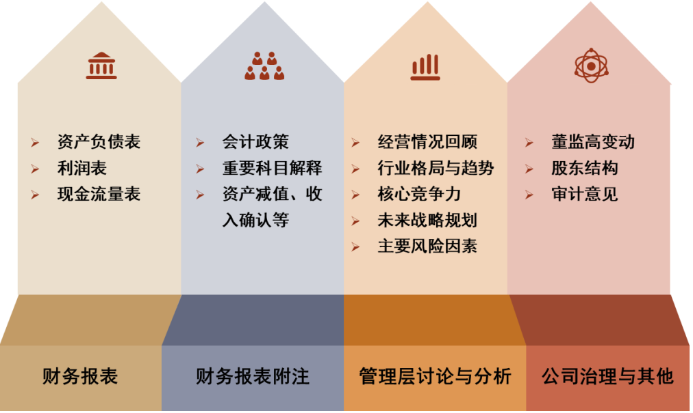
资料来源：中金公司研究部
在上述内容中，管理层讨论与分析（Management Discussion and Analysis，MD&A）是最值得关注的文本部分。相比财务报表中的结构化数据，MD&A包含了更多管理层对于公司经营环境、行业变化、竞争优势、未来战略和潜在风险的分析和判断。
从基本面量化的角度看，MD&A的重要性主要体现在三个方面：（1）MD&A能够补充财务数据难以反映的经营信息。例如，收入和利润只能反映经营结果，但管理层对于市场需求、价格变化、成本压力、产能利用率和订单趋势的描述，能够帮助投资者理解结果背后的驱动因素。（2）MD&A能够提供行业格局和竞争优势信息。例如，公司是否提及行业集中度提升、技术壁垒增强、客户结构优化、海外市场拓展等内容，往往能够反映其长期成长质量。（3）MD&A能够帮助识别潜在风险。财务报表中的风险暴露通常具有滞后性，而MD&A中的风险提示、经营压力和不确定性描述，可能更早反映公司基本面变化。
图表6：MD&A信息解析
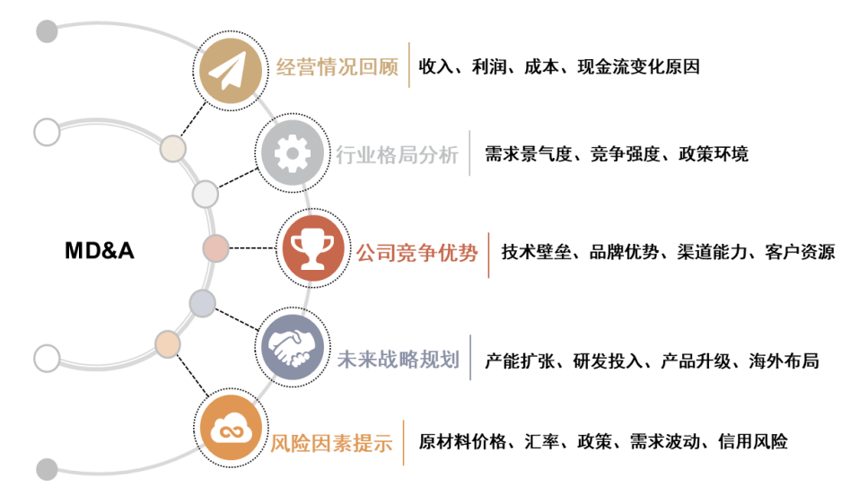
资料来源：中金公司研究部
LLM的财报文本解析有助于成长策略定位优势赛道
我们在报告《基本面量化系列（3）：业绩成长是否具有延续性》、《基本面量化系列（12）：如何度量非理性估值定价偏差？》、《基本面量化系列（17）：上市公司质量评估新视角》中，陆续构建和完善了成长趋势共振选股策略，构建流程如下图表所示。该策略基于利润的增长趋势、分析师预期信息、估值、市场反应等信息挖掘优质的成长公司，是“好公司”、“好价格”的二维筛选。
图表7：成长趋势共振选股策略实施过程
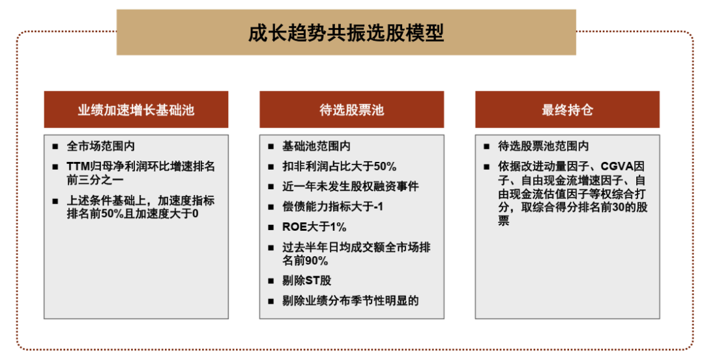
资料来源：中金公司研究部
但经典的成长股投资思路中，“好赛道”也是较为关键的选股因子。成长股投资大师菲利普·A·费雪在其经典的15条选股原则中，有相当一部分都在强调行业和商业特质的重要性。他非常重视“公司是否拥有具备足够市场潜力的产品或服务，使得销售额至少在几年内大幅增长”，这本质上就是考察行业需求天花板和上行周期，在更高维度上去验证增长的持续性和空间性。
图表8：菲利普·A·费雪成长股投资的15条选股原则
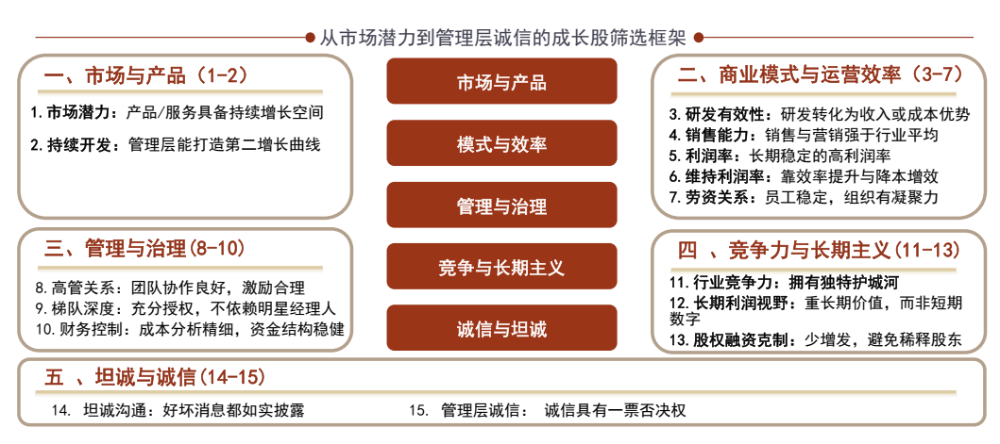
资料来源：《Common Stocks and Uncommon Profits》（1958，菲利普·A·费雪），中金公司研究部
同时，基于前文的分析，我们了解到，上市公司年度报告和半年度报告中，往往会包含行业格局、未来战略规划等关键要素。如果我们能够通过LLM解析财报文本，获取行业需求、未来展望、管理层“坦诚度”等信息，将其引入成长趋势策略的选股过程，则可对该策略在“好赛道”维度的信息缺失进行有效补充。
按照这一思路，我们运用具有较强的长文本处理能力的deepseek-v4-pro模型（可将财报文本相对完整地提供给模型进行分析），对每期成长趋势共振选股策略的待选股票池样本的最近一期年度/半年度报告进行分析，目标是获取报告期内行业发展特征、管理层对未来行业的判断及规划、管理层的坦诚度等维度信息。
图表9：LLM解析年度/半年度报告的核心问题
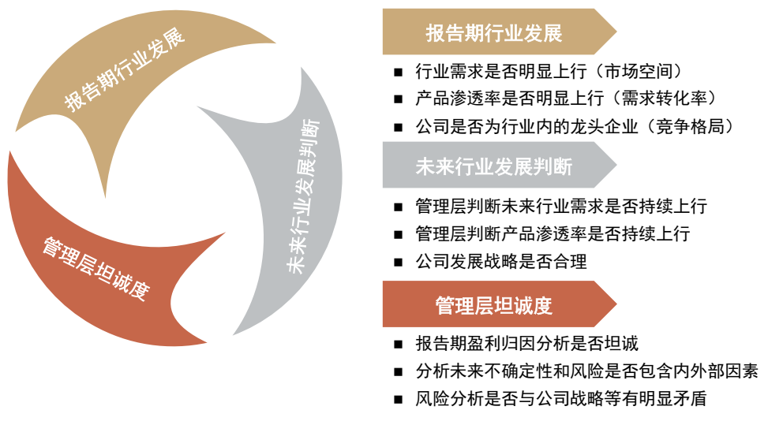
资料来源：中金公司研究部
具体实践过程中，我们要求DeepSeek从财报文本中，获取跟上述问题相关的文本，逐个回答上述问题，并最终提供定量评分观点。
对于行业需求、产品渗透率变化的打分，评分标准如下图表所示，分为5档，文本中提供了具体数据支持并且行业需求/产品渗透率有明显提升的是5分，而没有数据支持的定性的上行判断为4分，加入了信息可靠性的考量。当然，也可能存在财报中未提供任何相关信息的情形，我们给这种情况赋分为2.5分，优先级在定性判断/定量判断下行的情形之前。
图表10：LLM对各维度核心问题的评分标准
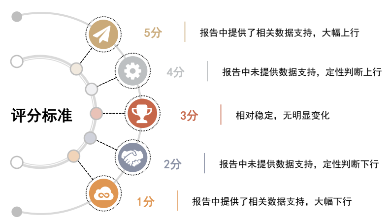
注：如果没有相关信息可以对核心问题进行判断，则评分为2.5分
资料来源：中金公司研究部
对于公司发展战略的合理性的评分则是如图所示的标准，我们提供了三个维度的具体条件，如果均满足，则评价为最高分的3分，而如果某几个条件不满足，则相应扣减分数，分值在0到3分范围内。
图表11：Prompt分析公司战略规划维度
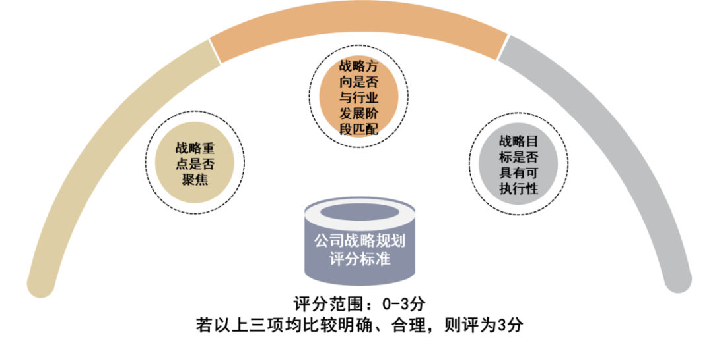
资料来源：中金公司研究部
对于管理层“坦诚度”的评价，我们主要关注两方面，一方面是报告期盈利归因分析及未来不确定性分析时，是否包含同时分析了公司内部和外部环境的因素，如果内外部因素都有全面分析，可以视为坦诚的，如果下行期只归因于外部环境，上行期只分析内部贡献，都有失偏颇。另一方面是关注风险分析与公司战略规划是否存在明显矛盾的地方。评分结果则为二元分布，正面观点为1分，负面观点为0分。
将大语言模型（LLM）应用于量化策略的构建，投资者们首先质疑的点在于输出观点的稳定性及策略的可复现性。为验证我们的策略方案中，LLM输出观点的稳定性，我们用相同的prompt对同一篇年度报告进行了10轮次独立的分析和评价，并获得了以下评分结果。
LLM评分的稳定性分析：对于财务报告中有较为明确表述的内容，DeepSeek多次独立的评分结果是较为稳定的，具有较好的可复现性，如报告期行业需求、行业未来需求判断、公司发展战略合理性评分等；但是对于财务报告中未直接阐述的概念，DeepSeek则会通过一些语句去判断是否存在一些暗示，此时评分结果是不稳定的，如报告期产品渗透率。
图表12：对同一篇年度财务报告的10轮次独立分析评分结果
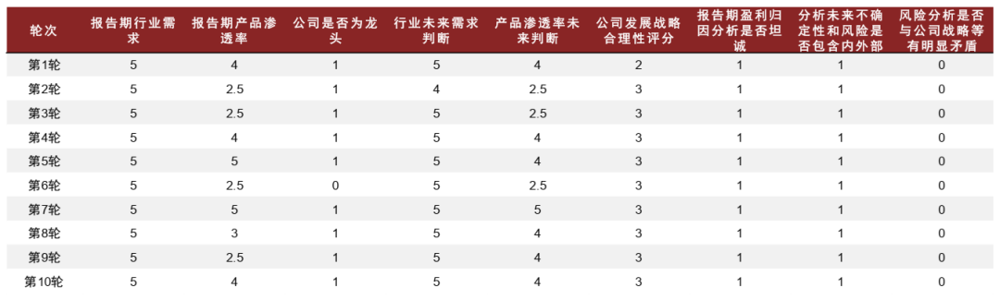
注：每一轮次的评分结果均由DeepSeek生成
资料来源：Wind，中金公司研究部
AI增强的成长趋势选股策略：年化收益率达31.7%
LLM财报解析的各维度评分均可增强成长趋势策略
如前文所述，我们在基本面量化系列报告中，逐步构建和完善了成长趋势共振选股策略，截至2026年4月30日，该策略2021年以来的年化收益率达19.7%，相较于偏股混合型基金指数的年化超额收益率也达18%，样本外表现相对较好。
图表13：成长趋势共振选股策略回测净值
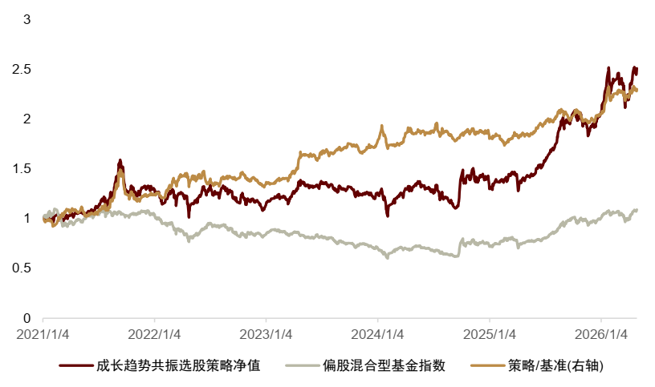
注：截至2026-04-30
资料来源：Wind，中金公司研究部
在原成长趋势选股模型的基础上，我们尝试与各维度LLM财报解析观点结合。核心思路就是在原成长趋势选股过程中，在待选池内综合因子筛选前，加入一层财报文本评分筛选，取财报文本评分高的股票进入候选池，再依据改进动量因子、自由现金流因子等进行综合打分并获取最终持仓。
如前文所述，我们通过DeepSeek对策略待选池内样本的年度/半年度报告进行解析，所获取的评分维度涵盖了报告期行业发展、管理层对未来行业发展的判断、管理层坦诚度等。在尝试将成长策略模型与财报解析观点结合时，我们可以分别测试不同维度评分结果对成长策略收益表现的影响。
图表14：成长趋势策略与LLM财报文本解析观点结合的模型框架
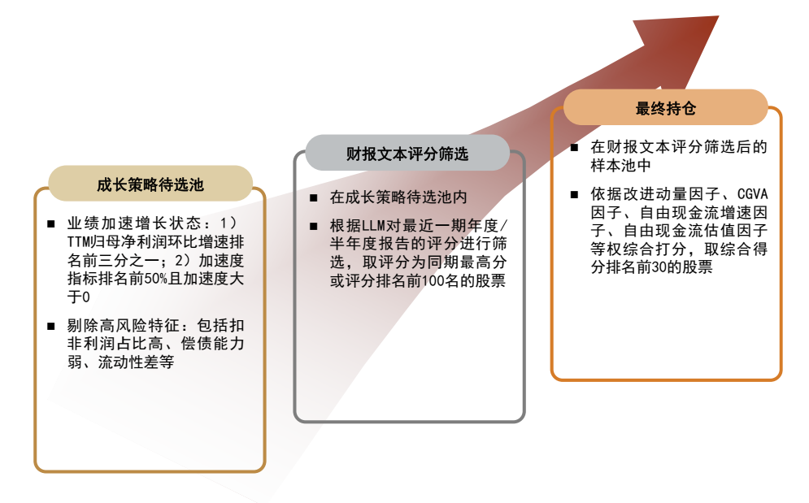
资料来源：中金公司研究部
我们按照上述模型框架，测试了与不同维度财报文本评分结合的成长趋势模型收益表现，统计期为2021-01-01至2026-04-30。
如下图所示，各个维度的财报评分均对成长趋势策略收益表现存在一定的增强效果，报告期行业发展信息增强效果相对较好，说明年度报告中对报告期的行业分析信息质量相对较高。
报告期行业需求信息对成长趋势策略收益表现影响较大，年化收益率可提升8个百分点。其中，结合报告期行业需求评分后，新成长趋势模型年化收益率可达28.0%，相较同期原成长趋势策略收益提升8个百分点。说明借助财报文本分析，可以有效识别上市公司所在行业需求的发展趋势，有助于筛选出“好赛道”的公司。
图表15：与不同维度财报评分结合的新成长趋势模型的收益统计
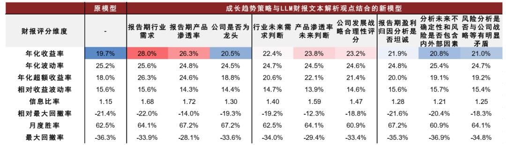
注：统计期为2021-01-01至2026-04-30；超额收益比较基准为偏股混合型基金指数
资料来源：Wind，中金公司研究部
AI增强的成长趋势选股策略2026年YTD收益率达34.6%
基于以上策略框架及策略测试情况，我们认为构建AI增强的成长趋势选股策略，可以以报告期行业需求信息为核心，参考行业未来需求判断、报告期盈利归因分析“坦诚度”评分信息剔除尾部风险，综合进行财报文本评分筛选。具体步骤如下：
► 筛选报告期行业需求评分为5分，或同期排名前100名的股票样本；
► 剔除报告期盈利归因分析“坦诚度”为0或者行业未来需求判断下行的样本，剩余样本进入候选样本池。
其中，增加同期排名条件，是为了让进入因子筛选前的样本池数量相对稳定。
AI增强的成长趋势策略年化收益率达31.7%，相较偏股混合型基金指数年化超额收益率达29.0%。如下图表所示，AI增强的成长趋势策略每一年度均相较于原成长策略有所增强，包括市场相对弱势的2022、2023年度；并且在2024、2025年市场走出趋势性行情过程中，由于增加了对优势赛道信息的捕捉，收益率提升幅度较大。
截至2026年5月25日，AI增强的成长趋势策略2026年度的YTD收益率达34.6%，相较于原成长趋势策略的22.7%也有明显提升，尤其在2026年5月以后（样本外阶段），财报文本评分信息的超额贡献进一步放大。
图表16：AI增强的成长趋势策略回测净值
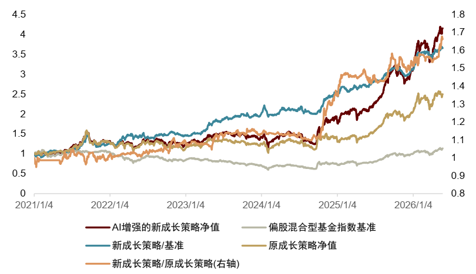
注：截至2026-05-25
资料来源：Wind，中金公司研究部
图表17：AI增强的成长趋势策略历年收益统计
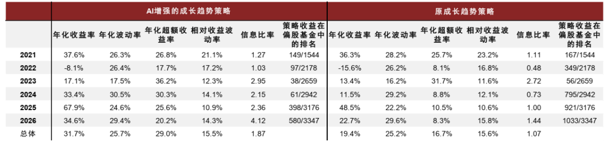
注：统计期为2021-01-01至2026-05-25；超额收益比较基准为偏股混合型基金指数；2026年收益率和超额收益率均为YTD数据
资料来源：Wind，中金公司研究部
Source
文章来源
本文摘自：2026年5月29日已经发布的《基本面量化系列（29）：AI 增强的成长趋势选股策略》
古翔 分析员 SAC 执证编号：S0080521010010； SFC CE Ref：BRE496
周萧潇 分析员 SAC 执证编号：S0080521010006； SFC CE Ref：BRA090
刘均伟 分析员 SAC 执证编号：S0080520120002； SFC CE Ref：BQR365
Legal Disclaimer
法律声明